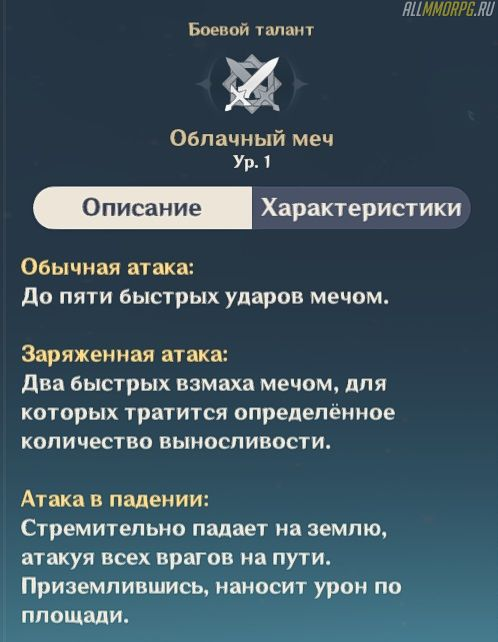
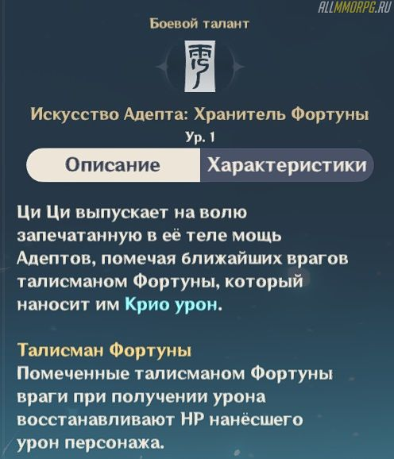

Ци Ци – ★★★★★ герой в Genshin Impact, принадлежащий стихии Крио.
Это достаточно мощный поддержки с неплохим уроном,
который станет хорошим дополнением любого отряда, где есть элементы стихии Гидро и Пиро.
Если вы уже выбили этого героя или только планируете добавить его в свою коллекцию,
вам необходимо прочитать гайд на Ци Ци и узнать все ее особенности.
Помимо плюсов, Ци Ци обладает несколькими минусами:
Ци Ци наноси врагу до пяти молниеносных атак врагу в ближнем бою. Заряженная способность наносит противнику урон от двух сильных атак, которые тратят часть запаса выносливости.
«Искусство адепта: Хранитель Фортуны» – ультимейт Ци Ци, который накладывает на всех противников, находящихся поблизости, эффект «Талисман Фортуны». При нанесении урона помеченным врагам герой восстановит огромный запас здоровья. Ультимейт Ци Ци позволяет за короткое время излечить раненых членов отряда, но у него есть один весомый недостаток – очень долгое время восстановления.
Ци Ци – это универсальный герой, который может как дамажить, так и исцелять союзников. Ее способности пригодятся вам на всех этапах игры, особенно во время сражения с монстрами в сложных подземельях. Дополнительно героя можно использовать для добычи ресурсов, так как она может ломать мечом залежи полезных ископаемых.